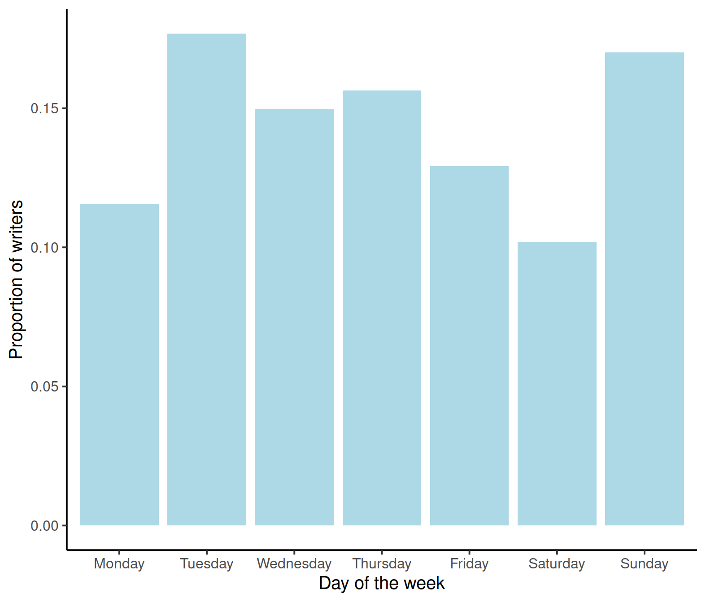

The past few weeks have focused on tests for numeric response variables, such as:
This week we will investigate tests for:
For the first time, you will be working with a statistical test that applies to categorical variables with more than two categories.
Note: the symbol \(\chi^2\) is also written as “chi-square” or “chi-squared,” and is pronounced “kai-square” or “kai-squared.”
The two tests of focus this week are the \(\chi^2\) goodness-of-fit test and the \(\chi^2\) test of independence. The first is used to assess whether sample results conform with an hypothesis about the proportional breakdown of the various categories in the population. The latter tests if two categorical variables are associated in the population or not.
The \(\chi^2\) goodness-of-fit test applies to categorical variables. For ease of exposition, suppose the categorical variable of interest has \(C\) possible unique categories. For example, the variable “Days of the week” has \(C = 7\) possible categories: Monday, Tuesday, Wednesday, Thursday, Friday, Saturday, and Sunday.
We have collected sample data for a variable of interest, and we can compute the proportion of individuals in the sample falling into each of the \(C\) distinct categories, \(p_1, p_2, ..., p_C\).
We wish to check whether the sample proportions are consistent with hypothesised proportions (i.e. an hypothesised distribution) \(p_{1,0},\ p_{2,0},\ ...,\ p_{C, 0}\).
Examples of when to use \(\chi^2\) goodness-of-fit test
We have a bag of sweets in 5 different colours. We’d like to test if the different colours are present in the same proportion, i.e. \(p_1 = p_2 = p_3 = p_4 = p_5 = 1/5\) or equivalently \(p_1 = 0.2\), \(p_2 = 0.2\), \(p_3 = 0.2\), \(p_4 = 0.2\), \(p_5 = 0.2\).
We have a bag of sweets in 5 different colours. We’d like to test if the different colours are distributed as follows: \(p_1 = 0.2, \ p_2 = 0.1, \ p_3 = 0.3, \ p_4 = 0.1, \ p_5 = 0.3\).
Null hypothesis
\(H_0: p_1 = p_{1,0},\ p_2 = p_{2,0},\ ...,\ p_C = p_{C,0}\)
In loose terms: proportional breakdown of the categories in our sample is consistent with an hypothesised distribution.
Alternative hypothesis
\(H_1:\) Some \(p_i \neq p_{i,0}\)
In loose terms: the proportional breakdown of the categories in the same does not follow the hypothesised distribution.
Test statistic
We compare observed counts with expected counts
\[ \chi^2 = \sum_i \frac{(O_i - E_i)^2}{E_i} \] where:
\(\sum\) = sum over all possible categories
\(O_i\) = observed counts for category \(i\)
\(E_i\) = expected counts for category \(i\)
If the p-value computed using a \(\chi^2\) distribution with df = \(\text{# categories} - 1 = C - 1\) degrees of freedom is less than the chosen significance level (e.g. 0.05), then we reject the null hypothesis.
For the goodness-of-fit test, we need one variable and we also need a hypothesis about how that variable should be distributed. For the results of the test to be valid, the following assumptions should be met:
Checking assumptions
Are people equally likely to be born on any of the seven days of the week?
To investigate this question, we’ll be using the data set writers.csv. In this file, the days of birth were recorded for 147 “noted writers of the present,” listed in the The World Almanac and Book of Facts, 2000. You can also find the data at this link: https://uoepsy.github.io/data/writers.csv
Equivalently, thinking in terms of proportions (or probabilities)
To write the null and alternative hypotheses formally, we need to define some symbols.
Let \(p_{Mo}\) represent the proportion of all people who were born on a Monday, or equivalently, the probability that a randomly selected individual was born on a Monday. Likewise, let the values \(p_{Tu}, p_W, ..., p_{Su}\) represent all the proportion of all people who were born on Tuesday, Wednesday … and Sunday respectively. The values of the proportions specified by the null hypothesis are:
\[ \begin{aligned} p_{Mo} &= 1/7 = .1429 \\ p_{Tu} &= 1/7 = .1429 \\ \dots \\ p_{Su} &= 1/7 = .1429 \end{aligned} \]
Hence the null and alternative hypotheses are:
\[ \begin{aligned} H_0 &: p_{Mo} = p_{Tu} = \cdots = p_{Su} = 1/7 \\ H_1 &: \text{At least one }p_{i} \neq 1/7 \end{aligned} \]
The null hypothesis asserts specific values for the population proportion in each category. The alternative hypothesis simply states that at least one of the population proportions is not as specified in the null hypothesis.
The test statistic measures how far the observed sample results deviate from what is expected, if the null hypothesis is true. With a \(\chi^2\) test, you contstruct the test statistic by comparing the observed sample counts in each category to the expected counts, under the null hypothesis.
Confused about populations, parameters, samples and statistics? Look back at Semester 1, Week 11
Let’s read the data into R:
library(tidyverse)
writers <- read_csv('https://uoepsy.github.io/data/writers.csv')
head(writers)## # A tibble: 6 x 2
## ID DayOfWeek
## <dbl> <chr>
## 1 1 Thursday
## 2 2 Thursday
## 3 3 Tuesday
## 4 4 Friday
## 5 5 Friday
## 6 6 Sundaydim(writers)## [1] 147 2We have data on the 147 noted writers listed in World Almanac and Book of Facts 2000. For each we have a variable “DayOfWeek” recording which day of the week their birthday falls.
It looks like the categorical variable specifying the day of the week is not correctly stored as a factor. Let’s fix that:
writers$DayOfWeek <- as.factor(writers$DayOfWeek)
head(writers)## # A tibble: 6 x 2
## ID DayOfWeek
## <dbl> <fct>
## 1 1 Thursday
## 2 2 Thursday
## 3 3 Tuesday
## 4 4 Friday
## 5 5 Friday
## 6 6 SundayOnce we’ve changed DaysOfWeek into a factor, we’ll check if the levels of the factor are in the correct order (i.e. are the days of the week in the correct order?)
The following code displays the possible distinct categories that the variable can take:
levels(writers$DayOfWeek)## [1] "Friday" "Monday" "Saturday" "Sunday" "Thursday" "Tuesday"
## [7] "Wednesday"It doesn’t look like the levels of the factor are in the order we expect.
writers$DayOfWeek <-
factor(writers$DayOfWeek,
levels = c("Monday", "Tuesday", "Wednesday",
"Thursday", "Friday", "Saturday", "Sunday"))
levels(writers$DayOfWeek) ## [1] "Monday" "Tuesday" "Wednesday" "Thursday" "Friday" "Saturday"
## [7] "Sunday"Now we want to see how many writers were born on each day of the week.
writers_table <- writers %>%
group_by(DayOfWeek) %>%
summarise(observed_count = n())
writers_table## # A tibble: 7 x 2
## DayOfWeek observed_count
## <fct> <int>
## 1 Monday 17
## 2 Tuesday 26
## 3 Wednesday 22
## 4 Thursday 23
## 5 Friday 19
## 6 Saturday 15
## 7 Sunday 25It looks like the most writers were born on a Tuesday and the least born on a Saturday. Differences across the week don’t look too big - but let’s create a visualisation.
To create a visualisation of the distribution of birthdays, we need to calculate a proportion for each day of the week. The proportion of birthdays on a Monday is calculated as the count of birthdays on a Monday divided by the sample size (\(n\)). Put simply:
\[ 17/147 = 0.12\] Now, to use R to calculate our sample proportions for each day of the week and store this in our table…
writers_table <- writers_table %>%
mutate(prop = observed_count / nrow(writers)) # the nrow function is the number of rows in our dataset (our sample size) as each row is a data point
writers_table## # A tibble: 7 x 3
## DayOfWeek observed_count prop
## <fct> <int> <dbl>
## 1 Monday 17 0.116
## 2 Tuesday 26 0.177
## 3 Wednesday 22 0.150
## 4 Thursday 23 0.156
## 5 Friday 19 0.129
## 6 Saturday 15 0.102
## 7 Sunday 25 0.170Remember, all sample proportions sum to one!
sum(writers_table$prop)## [1] 1Now, to produce our bar graph…
# telling R we're using the writers_table object, we want DayOfWeek on the x-axis (bottom) and proportion on the y-axis
ggplot(writers_table, aes(x = DayOfWeek, y = prop)) +
geom_col(fill = 'lightblue') + # colour of our bars (change the colours!)
labs(x = "Day of the week", y = "Proportion of writers") + # labels for our x- and y-axis
theme_classic(base_size = 15)
As our count data showed, there isn’t a great difference in the proportion of people born on any given day of the week, but it’s always useful to make a nice visualisation!
What value would make sense for the expected count of Monday birthdays? Intuitively, it would make sense for the expected count of Monday birthdays, under the null hypothesis, would be 1/7 of all birthdays fall on a Monday.
Using the formula for the expected count, \(E_i = n \cdot p_{i,0}\), where \(n\) = sample size, \(p_{i,0}\) is the hypothesised population proportion for that category under the null hypothesis:
\[ 147 \cdot \frac{1}{7} = 21 \] We would expect the frequency of birthdays on a Monday to be 21.
To calculate our expected count for the other days of the week…
writers_table <- writers %>%
group_by(DayOfWeek) %>%
summarise(observed_count = n()) %>%
mutate(expected_count = rep(147 * (1/7), 7))
writers_table## # A tibble: 7 x 3
## DayOfWeek observed_count expected_count
## <fct> <int> <dbl>
## 1 Monday 17 21
## 2 Tuesday 26 21
## 3 Wednesday 22 21
## 4 Thursday 23 21
## 5 Friday 19 21
## 6 Saturday 15 21
## 7 Sunday 25 21The rep(x, times) function will repeat x a given number of times.
Above, we calculated the expected count, 147 * (1/7) and then repeated it for the 7 days of the week. For this example, the null hypothesis specifies the same proportions for all 7 days of the week, hence the expected count for each day of the week is 21.
As we’ve calculated our expected count, we can also calculate our expected proportion. As there are 7 days of the week, we would expected the proportion of birthdays to fall equally across those days, i.e. 1/7 of birthdays fall on a Monday, 1/7 fall on a Tuesday etc.
writers_table <- writers %>%
group_by(DayOfWeek) %>%
summarise(observed_count = n()) %>%
mutate(expected_count = rep(147 * (1/7), 7)) %>%
mutate(expected_prop = rep(1/7, 7))
writers_table## # A tibble: 7 x 4
## DayOfWeek observed_count expected_count expected_prop
## <fct> <int> <dbl> <dbl>
## 1 Monday 17 21 0.143
## 2 Tuesday 26 21 0.143
## 3 Wednesday 22 21 0.143
## 4 Thursday 23 21 0.143
## 5 Friday 19 21 0.143
## 6 Saturday 15 21 0.143
## 7 Sunday 25 21 0.143First, we need to calculate \(\frac{(O_i-E_i)^2}{E_i}\) for each day of the week (category).
writers_table <- writers_table %>%
mutate(std_sq_diff = (observed_count - expected_count)^2 / expected_count)
writers_table## # A tibble: 7 x 5
## DayOfWeek observed_count expected_count expected_prop std_sq_diff
## <fct> <int> <dbl> <dbl> <dbl>
## 1 Monday 17 21 0.143 0.762
## 2 Tuesday 26 21 0.143 1.19
## 3 Wednesday 22 21 0.143 0.0476
## 4 Thursday 23 21 0.143 0.190
## 5 Friday 19 21 0.143 0.190
## 6 Saturday 15 21 0.143 1.71
## 7 Sunday 25 21 0.143 0.762
Next, we need to sum our standard square differences column, to get out test statistic.
chi_stat <- sum(writers_table$std_sq_diff)
chi_stat## [1] 4.857143What does 4.85 mean?
If the observed and expected frequencies had been exactly equal, the chi-square statistic would have been 0 and you would have had no reason to doubt the null hypothesis that all days of the week are equally likely to be someone’s birthday.
\[ \chi^2 = \frac{(21 - 21)^2}{21} + \cdots + \frac{(21 - 21)^2}{21} = 0 \]
Large values of the test statistic constitute evidence against the null hypothesis. Answers will vary about whether this test statistic provides convincing evidence. We also need to calculate the p-value, using the pchisq function. You need to know how likely it is that you would obtain a test statistic this large (or larger) by random chance alone if all seven days of the week are equally likely to be a person’s birthday.
As always, your next step is to calculate the p-value.
The p-value tells you the probability of getting sample data at least as far from the hypothesized proportions as these data are, by random chance if the null hypothesis is true.
So again, a small p-value indicates the sample data is unlikely to have occurred by chance alone if the null hypothesis is true, providing evidence in favour of the alternative.
When the test statistic is large enough to produce a small p-value, then the sample data provide strong evidence against the null hypothesis
We will use the pchisq(<obs statistic>, df) function which wants our test statistic and degrees of freedom. Remember, our degrees of freedom are the # categories - 1, i.e. \(C - 1\).
1 - pchisq(chi_stat, df = 6)## [1] 0.562262If all seven days of the week are equally likely to be a person’s birthday, the probability that you would obtain a test statistic this large (or larger) by random chance alone is .56. With an \(\alpha = 0.05\), we fail to reject the null hypothesis that all seven days of the week are equally likely to be a person’s birthday, as the p-value (0.56)i s larger than the significance level.
Now for assumption checks:
Let’s check them:
As usual, R has a nifty function to calculate our test. The chisq.test() function requires x (the observed counts) and p (the expected proportions, a numerical vector):
gof_test <- chisq.test(x = writers_table$observed_count,
p = writers_table$expected_prop)
gof_test##
## Chi-squared test for given probabilities
##
## data: writers_table$observed_count
## X-squared = 4.8571, df = 6, p-value = 0.5623The numbers all match!
If you were interested to know which day of the week had the highest contribution to the chi-square test statistic, you can calculate the Pearson residual.
# extracting the residuals from the performed chi square test performed above
gof_test$residuals ## [1] -0.8728716 1.0910895 0.2182179 0.4364358 -0.4364358 -1.3093073 0.8728716The highest values are for Tuesday and Saturday. The value for Tuesday, 1.09, is positive. This means that the observed counts were larger than expected. In the same way we interpret the residual for Saturday, -1.31. As this value is negative, this means that the observed counts of birthdays on a Saturday were less than expected.
The \(\chi^2\) test of independence is used to determine whether or not there is a significant association between two categorical variables.
Examples of when to use \(\chi^2\) test of independence
We want to know if sex is associated with political party preference - we survey 1000 voters and record their sex and political party preference.
If a person’s favourite colour is associated with their favourite sport - we survey 500 people and ask them about their preferences for both.
Does telling a joke affect whether or not a waiter in a coffee sop receives a tip?
In each scenario we want to know if two categorical variables are associated with each other. We can use the \(\chi^2\) test of independence to determine if there is a statistically significant association between the variables.
Null hypothesis
\(H_0:\) Variable A is not associated with variable B
\(H_1:\) Variable A is associated with variable B
Test formula
\[ \chi^2 = \sum_{all\ cells} \frac{(O - E)^2}{E} \] where:
If the p-value computed using a \(\chi^2\) distribution with (# rows - 1) \(\times\) (# columns - 1) is less than the chosen significance level (e.g. 0.05), then we can reject the null hypothesis.
Note that the formula is the same as the previous \(\chi^2\) test, but the degrees of freedom are different.
Two categorical variables
Two or more categories (groups) for each variable.
Independence of observations
Checking assumptions
Can telling a joke affect whether or not a waiter in a coffee bar receives a tip from a customer?
A study published in the Journal of Applied Social Psychology1 investigated this question at a coffee bar of a famous seaside resort on the west Atlantic coast of France. The waiter randomly assigned coffee-ordering customers to one of three groups. When receiving the bill, one group also received a card telling a joke, another group received a card containing an advertisement for a local restaurant, and a third group received no card at all.
The data is stored in the file TipJoke.csv, accessible via the link https://uoepsy.github.io/data/TipJoke.csv. The variables are:
Card: None, Joke, Ad.Tip: 1 = The customer left a tip, 0 = The customer did not leave tip.In the following, we will consider leaving a tip as “success.”
Define the null and alternative hypothesis.
Read in the data and run some checks.
Make sure the data is correctly encoded.
Create a barplot that visually summarises the data.
comment on what the graph shows.
Create a two-way table showing how many customers left a tip or not, for each card type (including None).
Run a \(\chi^2\) test of independence, report the test statistic and the p-value.
Hint: For a test of independence, you need to provide to chisq.test() only one argument, x = the contingency table of observed counts
Inspect the expected frequencies.
Look at the Pearson residuals and comment on what you notice.
Hint: look at the goodness-of-fit walkthrough and how we obtained the Pearson residuals - similar notation can be used to obtain the expected frequences too
Check the assumptions of the test.
Write a summary of the test results and relate back to the context of the study.
Gueaguen, N. (2002). The Effects of a Joke on Tipping When It Is Delivered at the Same Time as the Bill. Journal of Applied Social Psychology, 32(9), 1955-1963.↩︎